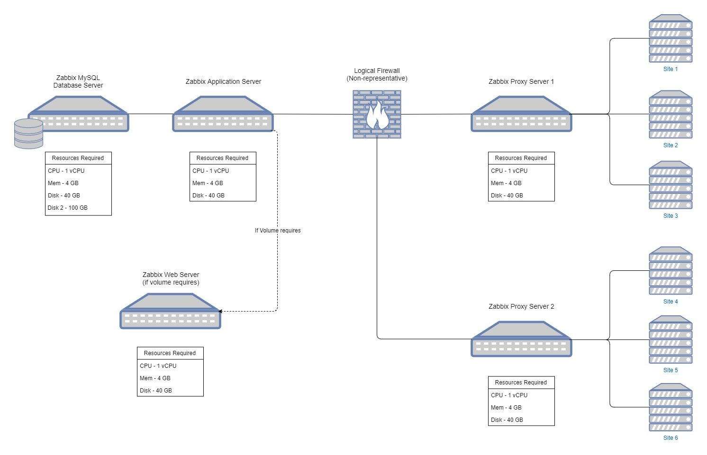

What is Zabbix
Zabbix Monitoring solution is a free, open source, scalable, distributed monitoring system. According to their website, they are Enterprise Ready out of the box and able to monitor anything, which is undoubtedly true, but the effort to do so may prove more prohibitive than they let on. Zabbix is used world wide, and developed in many languages for use in nearly any situation where you want to monitor your hardware, software, or embedded solutions.
The heart of it’s distributed power is in the templating system they employ. You create items that are monitored, triggers on those items, actions on those triggers, etc. Each layer can have one or several of the next layer for each entry, meaning things can get really in depth and sprawled out very quickly, if you let it. In actual use, however, the reality is you typically only monitor one item, with a few triggers, and each trigger has only a few actions. The next template is similar, as you can easily apply multiple templates to any target.
There is also a template template, if that makes sense. In other words, you can create a template with empty items to use as a template for creating other templates. It is the same idea as a programming interface, where you create the interface to define how to monitor a whole range of things, but you need another template based on the existing template to define the items that are monitored. This is often used around creating graphs for monitors from what I have seen, though there is no reason it couldn’t apply elsewhere, if it makes sense to do so. This templating concept is so core to the understanding and appropriate use of the product, that entire courses on Zabbix focus on nothing else. So do make sure, whatever you do, to understand and internalize the concepts and implementation details based on the templating structure if you intend to use Zabbix as well.
Zabbix Use Case
The rest of this document will navigate my installation and use of Zabbix for my current company. While I have played around with Zabbix previously (as early as the 2.0 release), this is my first serious endeavor with Zabbix, and while I am maintaining my employer’s current pilot based on version 3.4, the observations I am writing here will be in reference to version 4.0 which became generally available on Oct. 1, 2018.
The company I am doing this work for is a large multinational company with thousands of servers requiring monitoring over hundreds of sites. Some sites have no servers, some have a few, and a few aggregate hundreds of servers. In addition, I will use Zabbix to monitor network switching, and certain core applications - some are web enabled, and some that are not web enabled. Finally, I am intending to take the time to learn the API system and utilize it to integrate two way communication with our ticketing system (and maybe a few others along the way, if appropriate).
The use cases will include installation of new 4.0 servers in our test environment, upgrading to the 4.0 servers in our production environment, and the approach taken to create a maintainable structure of templates, scripts, macros, and user roles for scaling monitoring across the environment. Along the way, I hope to also document and maintain how to create maps and maintain them in a sane manner, or at least as sane a manner as possible…the Zabbix team has some work to do in that area to make it much easier, in my opinion.
Installation
Installation Design
The design of our installation in TEST is to simulate what we would need/desire in PRODUCTION, so the thought processes here will rely on our PRODUCTION needs, as is normal for any new implementation. In PRODUCTION, we will have thousands of servers, with additional switching and who knows how many other things we will be tasked to monitor. So given that a CPU item could (and does) have several items it monitors, and we can multiply that by the number of CPU’s, plus memory, plus disk space, etc.; it is very feasible we are talking about hundreds of thousands or even millions of monitors across our PRODUCTION environment. From the Zabbix Website, disk space sizing is largely dependent on number of monitored items and the historical records kept on those items. So to accommodate all that data, we will install MySQL on a separate server and have the Zabbix Application Server point to that database rather than the more typical local database.
The design is also configured to make using a load-balanced front-end server easy to install in front of the Application Server, if needed, however we do not intend to have a ton of different users logging in where we might need to worry about front-ending the server with a web-server, let alone doing so in a load balanced configuration. However I do recommend it if you are going to make your server available to view externally, as that allows you to put the web-server in the DMZ without exposing the Application Server any more than necessary. In our case, it is all internal users, so if they want to see it from a site outside our network, they will need to VPN in first.
In addition, to offload some CPU, Memory, and especially Network traffic, we will implement Zabbix Proxy Servers to support a subset of remote sites. Each remote site will have all devices reporting to the proxy and each proxy will report to the Application Server. This approach should allow us to scale to almost any size, though we will monitor resource utilization to see what is really required and how big we can really make this scale. I expect there will be a point where the Application Server is just overrun and needs to look at either clustering or some other load partitioning scheme, but that will likely be much larger than we will ever reach, especially with the offloading of the database and frontend work.
Design Layout:

Server Sizing
Initial sizing for all servers uses our default CENTOS 7 template, which has 1 vCPU, 4GB Memory, and a 40GB Hard Drive. Because this is built in VMware, resizing, specifically upsizing, CPU and Memory can be done very easily - often without even turning off the machine. While hard drive space is a little more difficult than that, it still isn’t hard, and usually isn’t needed anyway, as there is no data to grow (Database Server is the exception).
According to Zabbix’s website, there are a lot of recommendations and calculations that go into it. However, I found most or all of them very pessimistic. I agree, for public consumption, it is the safest route; but the reality is, especially in a virtual environment, you start small and add resources as needed.
If you do take any of my recommendations below to heart, it is incumbent on you to also do the following:
- Add the requirements for the Application Server and Database Server together if they are on the same server, my assumptions are based on the design above.
- Take the time to monitor the situation and adjust as necessary. Your situation is not the same as mine, and may require changes to the plan to accommodate.
- Take responsibility for what isn’t working. This worked for me, so it isn’t wrong. It is just, potentially, wrong for you.
Application Server
The application server is the heart of the system and therefore tends to need more compute resources than most other servers. Even so, I have found the 1vCPU and 4GB Memory sufficient
The hard drive space, in particular, is very large. We are thin provisioned, so we don’t need to worry about excess capacity much on this server, but if you want to size it properly, the application server, OS and all, fits tightly on 2GB. Considering approximately 1.5GB of that is just the OS, giving it at least 4GB and you should be very comfortable, even with space for future updates.
Database Server
The database server is the biggest difference from the rest. An empty Zabbix database running MySQL on CENTOS 7 comes in at approximately 3.5GB of storage. Add to that the calculated requirements found in the Requirements section of the documentation, and you can use up 40GB quite quickly.

MySQL isn’t really a resource hog, as databases go, but it does use considerable resources to do it’s work. To plan for this, I added a secondary 120GB hard drive and redirected the /data mount point to that drive. I also added another CPU and added 20GB memory to provide a total 24GB of RAM to it, just to make sure it wasn’t starved when indexing, or doing other utility tasks that tend to lockup an undersized database.
If you are trying to conserve space, please reference the Requirements and determine your own needs. There are far too many variables here to make a recommendation on sizing the database.
Finally, since I knew the number of monitors, history, etc would be large for my use case (based on the number of machines if nothing else); I went ahead and planed on using partitioned tables from the start. While there is some loss of granular control, it helps with performance considerably over time, and is far easier to implement at the beginning then waiting until it is needed. If your install is relatively small, and you do not need a lot of performance from Zabbix (as measured in New Values per Second; a.k.a nvpm), then this step is unnecessary and limiting. But if you know it is going to be a large installation, this is practically required to allow the environment to scale.
Front-End Server
The Front-End server, as supported and recommended by Zabbix, is an Apache web server. Apache web servers are notoriously lean and full function; meaning sizing for this server is minimal. Our default sizing should be good for any and/or all use cases our company has. Obviously if you are hosting many sites, and/or serving to many users, you will use more resources. But if that is the case, you don’t need this guide for sizing.
If you are trying to run extra lean and it is going to be a small footprint install, just build it into the application server. That is the design we are using and the size we have as listed above is working great. Running the front-end webserver separately is completely unnecessary from a resource or technical perspective for most users, and for those who would benefit, they already know Apache far better than I. The one piece you do need, however, if it isn’t already installed, is PHP. Be sure to have PHP (version 7.2 or above) installed on the webserver before you migrate off the local webserver - otherwise using a simple redirect from the external server may be a better option.
One last note regarding the web server. Many people have successfully used NGINX to front-end Zabbix, and I wouldn’t be surprised if some were successful getting it to work off an IIS server as well. I have not tried either, and with the recommendations from Zabbix, I have no desire to try at this time. If such an option is preferable in your situation, just be aware it is possible, but not likely supported.
Proxy Server
The proxy server is very similar to a tiny application server. The biggest differences are you almost always have the database installed local to the proxy (on the same machine); and there is no front-end webserver components to connect to. Size wise, though the database is installed, it is only used as a temporary storage structure and does not maintain data permanently, so it is going to be closer to the size of an application server than a database.
I have found the CPU and Memory utilization to be minimal in most of our use cases - we are using them as a local Zabbix aggregation point. This means we have more proxies than necessary, each reporting on a relatively small number of devices. Generally speaking, we don’t even need proxy servers for most sites, but that is a business decision and not a technical one. For this reason, all our proxies are the default server size, and have never needed to grow beyond that (so far).
If you are trying to size your proxy lean, I would recommend using the same size as your Application Server but with a slightly larger hard drive (in case of network outage). The database will take up a good 2GB empty, so maybe 10GB drive, just in case it is an extended outage between proxy and the main server. Even that is unnecessarily large in many cases and something like a 6GB should be more than sufficient for most outages.
Server Setup
I have extensive, step by step documentation of how I setup each component, however they are somewhat specialized for my company (critical company only information scrubbed, of course). The sections below layout the component installation pages.
Many steps for each component overlap. They assume you are installing only that component. Thanks to Linux package management systems, it is irrelevant if you run those steps again, Linux will just accept it and tell you there is nothing to do. Just realize it isn’t necessary and you can skip them or use it to double-check your work.
Application Server
Requires Database Server setup completed first
Database Server
Front-End Server
Requires Application Server setup completed first
Proxy Server
Requires Database Server setup completed first (local install)
Zabbix Agent
The Zabbix agent is a little different because it installs on every server that will be actively monitored. The locations will dictate the configuration, as some will point to one Proxy, some will point to a different Proxy, and some may even point to the Application Server directly. Generally speaking, however, they should be largely the same.